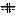

The truss element is a simple beam with hinges at both ends. Loads can only be applied at the nodes. Beside the label only the elongation stiffnes EA can be set.
| previous | Contents | next |
The truss element is a simple beam with hinges at both ends.
Loads can only be applied at the nodes.
Beside the label only the elongation stiffnes EA can be set.
Nodes only connected to truss elements have to have the restricted rotational degree of freedom (r).

EB-Beam is a Euler-Bernoulli beam with bending. No shear deformation
is taken into account. Besides nodal loading distributed linear normal
(ni, nk) and shear
(vi, vk) loading is supported.
You can insert arbitraty hinges at both ends of the beam. Use the ... hinge checkboxes in the properties dialogue. Don't insert multiple hinges - this would lead to a kinematic system.

EBS-Beam is a Timoshenko beam element with shear deformation.
Except this it corresponds to the EB-Beam element.
| previous | Contents | next |